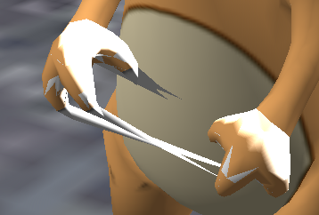

SirNate0
Anyone want to help me find the bug in this code that is leaving triangles connecting the two hands such that it looks like the character is playing cat’s cradle?

SharedPtr<Model> CloneModelForBones(Model* base, const Vector<String>& bones, float threshold, bool writeWeightToVertexColor)
{
if (!base)
return nullptr;
if (base->GetSkeleton().GetNumBones() == 0)
return nullptr;
using Blendices = std::array<unsigned char, 4>;
const auto context = base->GetContext();
Model* out = new Model(context);
out->SetSkeleton(base->GetSkeleton());
out->SetNumGeometries(base->GetNumGeometries());
out->SetBoundingBox(base->GetBoundingBox());
BoundingBox outputBBox;
PODVector<unsigned> boneIndices;
for (auto& b : bones)
{
unsigned bone = out->GetSkeleton().GetBoneIndex(b);
if (bone != M_MAX_UNSIGNED)
{
boneIndices.Push(bone);
}
else
{
URHO3D_LOGWARNING("Could not find bone " + b + " in Model " + base->GetName());
}
}
const auto& boneMappings = base->GetGeometryBoneMappings();
bool needBoneMappigns = false;
for (auto& m : boneMappings)
if (!m.Empty())
{
needBoneMappigns = true;
break;
}
std::function<float(const Vector4& weight, const Blendices& indices, unsigned geoIdx)> matchingWeight;
if (!needBoneMappigns)
matchingWeight = [&](const Vector4& weights, const Blendices& indices, unsigned) {
float weight = 0.f;
for (unsigned i = 0; i < 4; ++i)
{
auto w = weights.Data()[i];
unsigned b = indices[i];
if (boneIndices.Contains(b))
weight += w;
}
return weight;
};
else
matchingWeight = [&](const Vector4& weights, const Blendices& indices, unsigned geoIdx) {
float weight = 0.f;
for (unsigned i = 0; i < 4; ++i)
{
auto w = weights.Data()[i];
auto& bm = boneMappings[geoIdx];
unsigned b = bm.Size() ? bm[indices[i]] : indices[i];
if (boneIndices.Contains(b))
weight += w;
}
return weight;
};
unsigned geoIdx = 0;
for (auto& geometryLODs : base->GetGeometries())
{
out->SetNumGeometryLodLevels(geoIdx,geometryLODs.Size());
unsigned lodIdx = 0;
for (auto& geometry : geometryLODs)
{
BoundingBox bbox;
auto ib = geometry->GetIndexBuffer();
auto idata = ib->GetShadowData();
assert(idata);
if (!idata)
return nullptr;
assert(geometry->GetVertexBuffers().Size() == 1);
auto vb = geometry->GetVertexBuffer(0);
auto vdata = vb->GetShadowData();
assert(vdata);
if (!vdata)
return nullptr;
PODVector<unsigned char> outputVData;
HashMap<unsigned, unsigned> oldIndexToNew;
PODVector<unsigned short> outputIdcs;
auto outputVElements = vb->GetElements();
assert(vb->HasElement(SEM_BLENDINDICES));
assert(vb->HasElement(SEM_BLENDWEIGHTS));
auto bi = vb->GetElement(SEM_BLENDINDICES);
auto bw = vb->GetElement(SEM_BLENDWEIGHTS);
auto pos = vb->GetElement(SEM_POSITION);
assert(bi->type_ == TYPE_UBYTE4);
assert(bw->type_ == TYPE_VECTOR4);
if (pos)
assert(pos->type_ == TYPE_VECTOR3);
auto vsize = vb->GetVertexSize();
auto getBlendIndices = [&](unsigned idx){
return *reinterpret_cast<Blendices*>(vdata + vsize*idx + bi->offset_);
};
auto getBlendWeight = [&](unsigned idx){
return *reinterpret_cast<Vector4*>(vdata + vsize*idx + bw->offset_);
};
auto getPosition = [&](unsigned idx){
return *reinterpret_cast<Vector3*>(vdata + vsize*idx + pos->offset_);
};
auto addVertex = [&](unsigned oldIdx){
if (oldIndexToNew.Contains(oldIdx))
return oldIndexToNew[oldIdx];
for (unsigned char* d = vdata + vsize*oldIdx; d < vdata + vsize*(oldIdx+1); ++d)
outputVData.Push(*d);
if (pos)
bbox.Merge(getPosition(oldIdx));
auto newIdx = oldIndexToNew.Size();
oldIndexToNew[oldIdx] = newIdx;
return newIdx;
};
auto size = ib->GetIndexSize();
for (unsigned i = 0; i+2 < ib->GetIndexCount(); ++i)
{
unsigned idx1 = (size == 2) ?
unsigned(reinterpret_cast<unsigned short*>(idata)[i]) :
reinterpret_cast<unsigned*>(idata)[i];
unsigned idx2 = (size == 2) ?
unsigned(reinterpret_cast<unsigned short*>(idata)[i+1]) :
reinterpret_cast<unsigned*>(idata)[i+1];
unsigned idx3 = (size == 2) ?
unsigned(reinterpret_cast<unsigned short*>(idata)[i+2]) :
reinterpret_cast<unsigned*>(idata)[i+2];
float w1 = matchingWeight(getBlendWeight(idx1),getBlendIndices(idx1),geoIdx);
float w2 = matchingWeight(getBlendWeight(idx2),getBlendIndices(idx2),geoIdx);
float w3 = matchingWeight(getBlendWeight(idx3),getBlendIndices(idx3),geoIdx);
if (w1 > threshold && w2 > threshold && w3 > threshold)
{
// Add new triangle
outputIdcs.Push(addVertex(idx1));
outputIdcs.Push(addVertex(idx2));
outputIdcs.Push(addVertex(idx3));
}
}
// Add new data to the output model
{
Geometry* geoOut = new Geometry(context);
VertexBuffer* vbOut = new VertexBuffer(context);
IndexBuffer* ibOut = new IndexBuffer(context);
geoOut->SetLodDistance(geometry->GetLodDistance());
geoOut->SetNumVertexBuffers(geometry->GetNumVertexBuffers());
assert(geoOut->GetNumVertexBuffers() == 1);
auto vcount = oldIndexToNew.Size();
vbOut->SetShadowed(true);
vbOut->SetSize(vcount,outputVElements,false);
// if (auto dest = vbOut->Lock(0,vcount))
// {
// memcpy(dest,outputVData.Buffer(),outputVData.Size());
// vbOut->Unlock();
// }
// else
// {
assert(vbOut->SetData(outputVData.Buffer()));
// }
ibOut->SetShadowed(true);
ibOut->SetSize(outputIdcs.Size(),false,false);
assert(ibOut->SetData(outputIdcs.Buffer()));
geoOut->SetIndexBuffer(ibOut);
geoOut->SetVertexBuffer(0,vbOut);
geoOut->SetDrawRange(PrimitiveType::TRIANGLE_LIST,0,outputIdcs.Size());
out->SetGeometry(geoIdx,lodIdx,geoOut);
out->SetGeometryCenter(geoIdx,base->GetGeometryCenter(geoIdx));
out->SetGeometryBoneMappings(base->GetGeometryBoneMappings());
outputBBox.Merge(bbox);
}
lodIdx += 1;
}
//TODO: I'm not sure if this should be in the inner loop or in the outer LOD grouped loop.
geoIdx += 1;
}
out->SetBoundingBox(outputBBox);
return SharedPtr<Model>{out};
}
// It's not in this function, but if you want to test it it's easier to just specify the hand and have the code find the fingers for you.
Vector<String> ListBonesAndChildren(const Skeleton& skeleton, const Vector<String>& requestedBones)
{
Vector<String> out;
auto add = [&](const String& name) {
if (out.Contains(name))
return;
out.Push(name);
};
StringVector children;
std::function<void(const Bone& b)> check = [&](const Bone& b)
{
if (requestedBones.Contains(b.name_))
{
add(b.name_);
for (auto& c : children)
add(c);
children.Clear();
}
else
{
auto parentIdx = b.parentIndex_;
if (parentIdx != M_MAX_UNSIGNED)
{
auto& parent = skeleton.GetBones()[b.parentIndex_];
if (parent.nameHash_ != b.nameHash_)
{
children.Push(b.name_);
check(parent);
}
else
children.Clear();
}
else
children.Clear();
}
};
for (auto& b : skeleton.GetBones())
check(b);
return out;
}